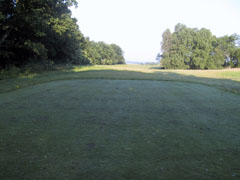

<div class="pages">
  <div data-page="hul10" class="page navbar-fixed toolbar-fixed" >
    <div class="navbar">
      <div class="navbar-inner">
        <div class="left">
          <a href="#" class="link back icon-only"><i class="icon icon-back"></i></a>
          <!-- <a href="#" class="back link icon-only"><i class="icon icon-back"></i></a> -->
        </div>
        <div class="center">Hul 10</div>
        <!-- <div class="right"></div> -->
        <div class="right">
        </div>
      </div>
    </div>
    <div class="page-content" style="padding-top:45px;">
       <div class="content-block">
          <center></center>
          <p>10. hul er det fjerde par 4 hul i Perlerækken og samtidigt starten på de sidste 9 huller, som af Henrik Knudsen fra TV3 er betegnet som "den bedste back-nine i Danmark". Og vi er naturligvis helt enige.</p>
          <center></center>
          <p>Udslaget er måske det sværeste på banen. Hele venstre side er out of bounds og i højre side ligger en sø omkranset af høje træer, hvilket gør, at du bør virkelig koncentrere dig om at ramme fairway. Tag hellere et jern, hvis du føler dig mere sikker. Indspillet på 10. hul er også en udfordring, med en strategisk placeret bunker foran til venstre for green, djævelsk budskads bag green og en sø til højre.</p>
          <p>Green har mange "skjulte" niveauforskelle som nødvendiggør omhyggelig læsning af linien inden du putter.</p>
          <p>For lav-handicapperen anbefales et langt drive med svagt fade, men pas på bevoksninger til højre for fairway i 200 til 300 meters afstand fra tee. Da greenen ikke er skrånende mod forkant, anbefales det at lande bolden kort af pinden for ikke at bringe budskadset bag green i spil.</p>
          <p>Hulsponsor: <br />
          <br /><br />
          Bænksponsor:<br />
           
          </p>
        </div>
    </div>
    </div>
    </div>
  </div>
</div>
